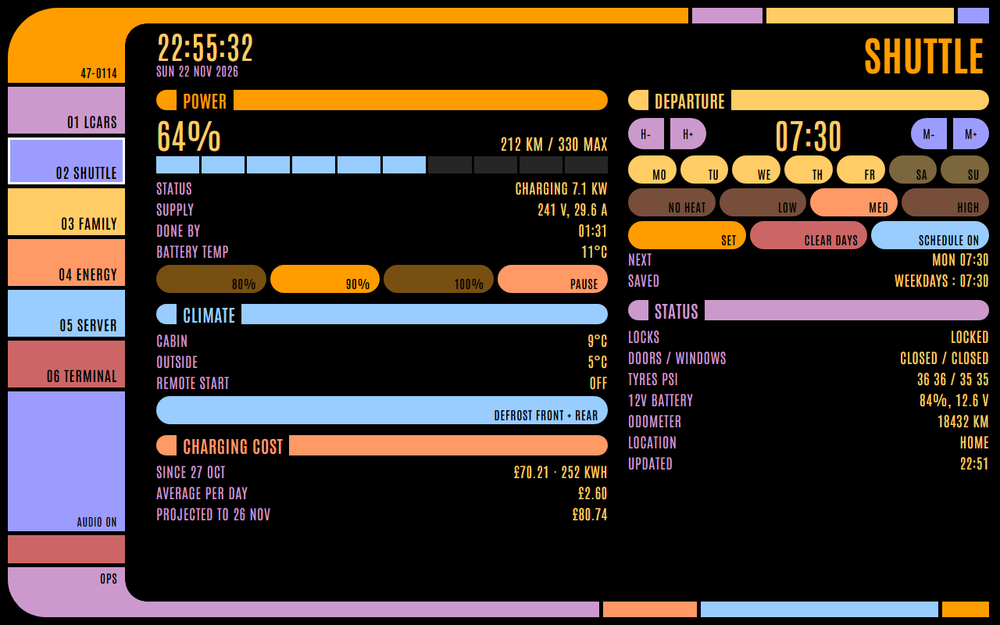
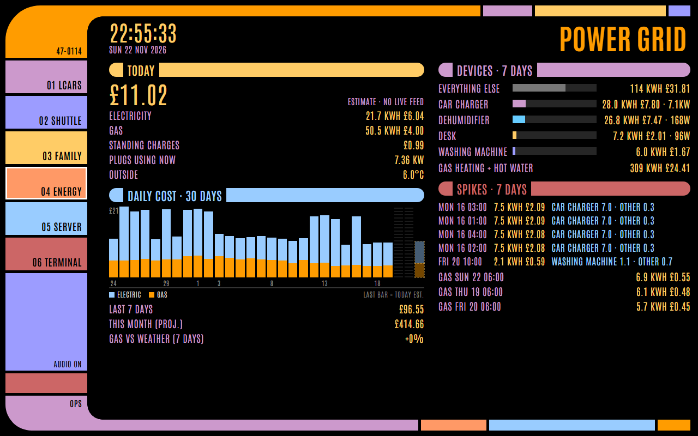
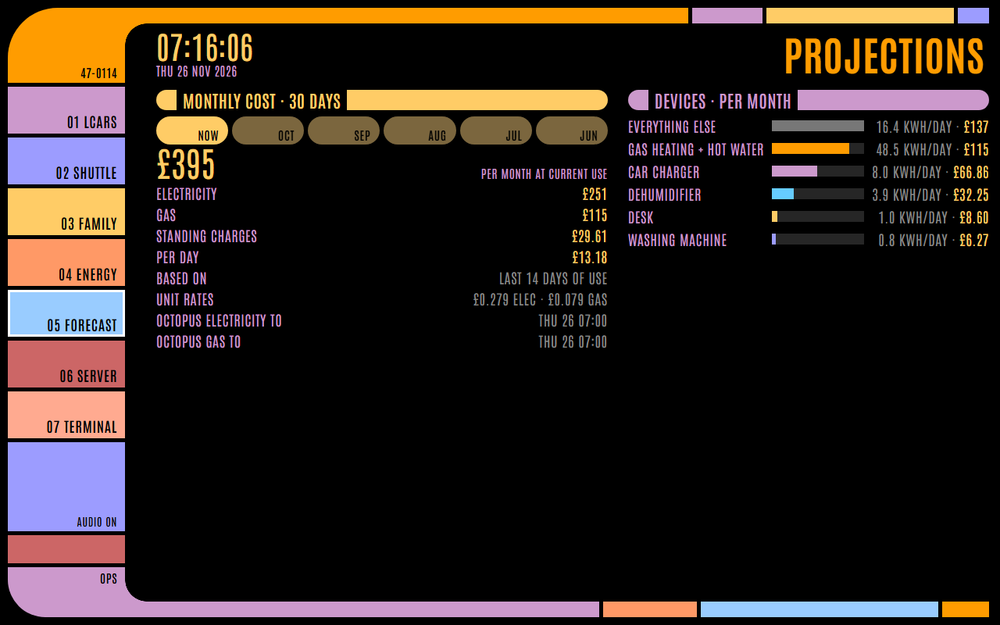
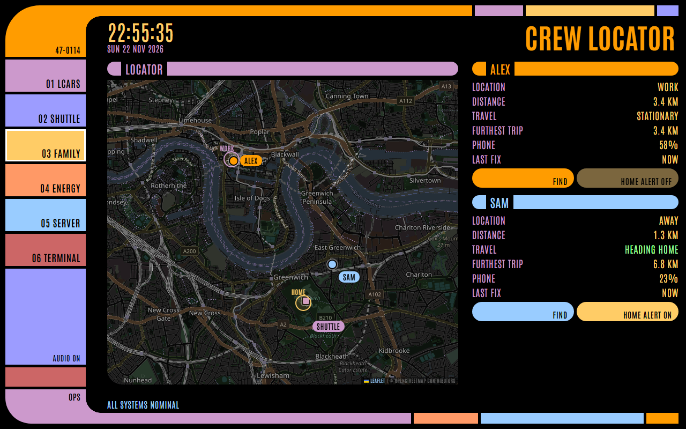
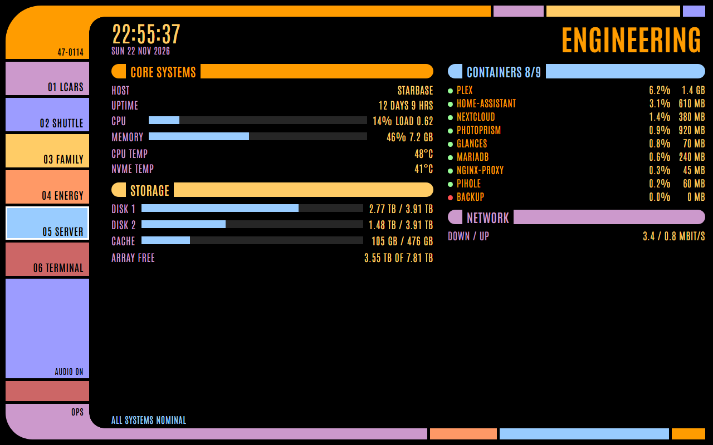
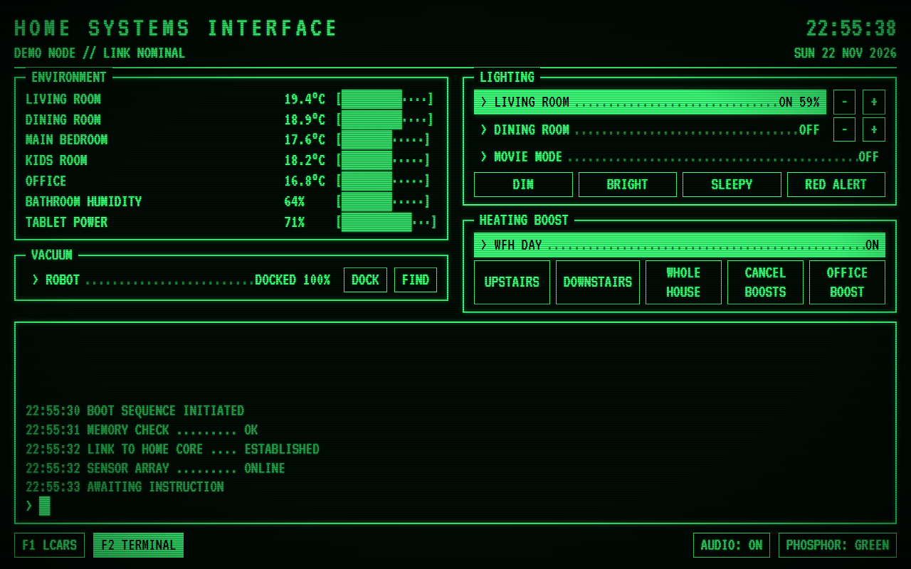

2026-11-22
A wall-mounted tablet that runs the house, styled like the LCARS computer screens from Star Trek. It's a custom Home Assistant card, so every button and number is live: lights, heating, the car charger, energy use and where everyone is.
You can try it below. The demo runs the real dashboard code with a made-up house, so press anything you like.
Pages
The buttons down the left side switch between pages.

- Main: lights and scenes, a kitchen timer, room temperatures, heating boosts and the robot vacuum
- Car: charge level, charge limit, defrost, departure times, tyres and locks, and how much home charging has cost since payday
- Family: a map showing where everyone is, how far from home and whether they're heading back
- Energy: today's cost (estimated, because the meter data arrives a day or two late), 30 days of electricity and gas, which devices use the most over the last day, week or month, and the biggest spikes
- Forecast: what each device would cost over a whole month at its recent rate of use, and for past months what each device actually used, with the total set against what Octopus charged
- Server: CPU, memory, disks and Docker containers on the home server
- Terminal: the same controls in a green-screen terminal style






How It Works
- It's one JavaScript file that defines two custom Home Assistant cards, LCARS and terminal, with no build step or framework
- A small Node script uploads the card and the dashboard layout to Home Assistant over its websocket API, so nothing has to be copied onto the server
- The layout (which buttons, rooms and devices) lives in one JSON file, separate from the code
- An old Amazon Fire tablet runs it full screen in Fully Kiosk Browser, and the screen wakes when someone walks past
- Buttons make LCARS-style beeps, and pressing one reads out what it did
- The energy page fits a straight line of daily gas use against outdoor temperature, so it can estimate today's cost before the meter readings arrive
Try It
The demo is here: LCARS Home Dashboard demo